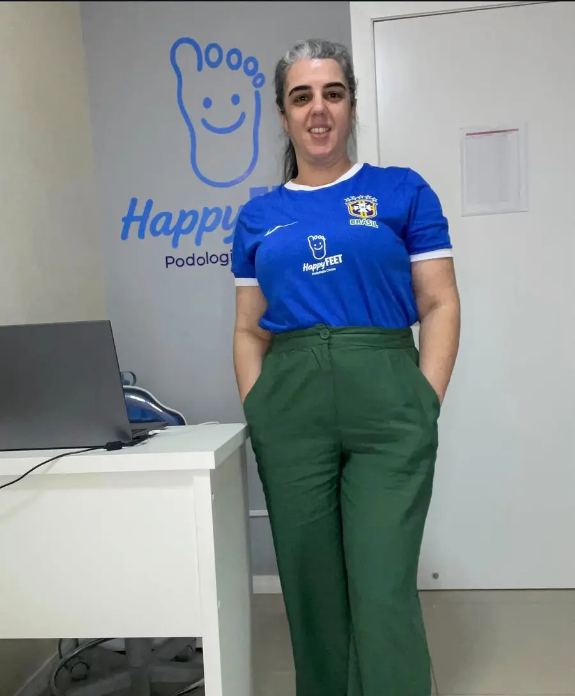
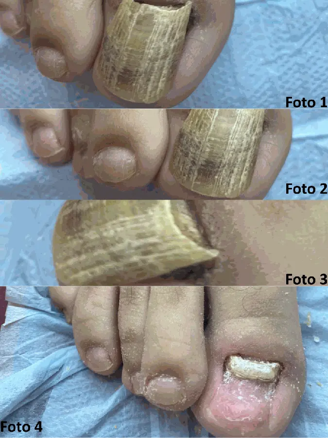
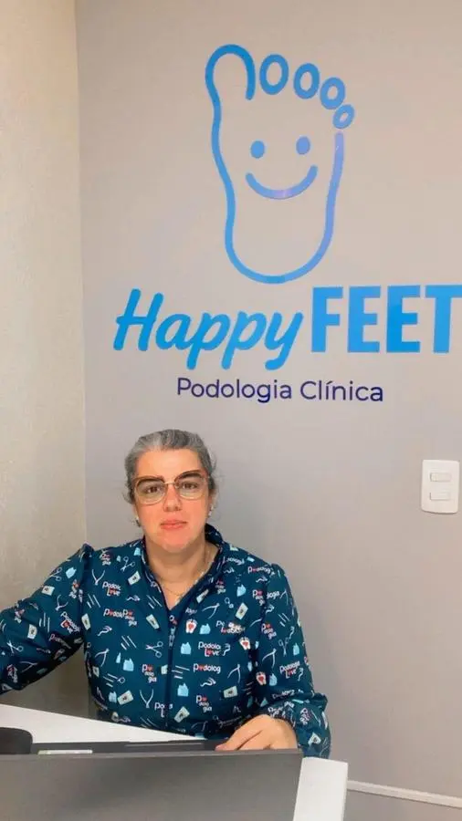
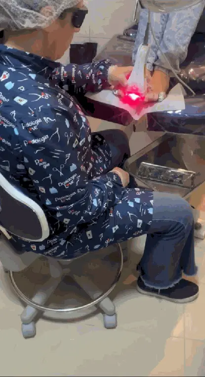

Unha encravada
Onicocriptose
Correção técnica da unha que machuca a pele, com assepsia rigorosa e foco no alívio da dor.
Agendar avaliaçãoPodologia clínica em Jaraguá do Sul
Unha encravada, podoprofilaxia, verruga plantar e laserterapia para micose de unha. Atendimento para todas as idades, em ambiente acolhedor e higienizado.
Prefere ligar? (47) 98860-4551

Serviços
Cada atendimento começa com uma avaliação. A partir dela, explicamos o procedimento indicado e os cuidados em casa.
Onicocriptose
Correção técnica da unha que machuca a pele, com assepsia rigorosa e foco no alívio da dor.
Agendar avaliação
Limpeza e cuidado preventivo dos pés
Limpeza clínica, corte técnico das unhas e orientação preventiva.
Agendar avaliação
Onicomicose, com laserterapia
Tratamento com tecnologia de laser e protocolo por fases, com acompanhamento da evolução.
Agendar avaliação
Olho de peixe
Procedimentos específicos para a verruga na sola do pé e orientação de cuidados após o tratamento.
Agendar avaliação
Podologia pediátrica
Abordagem lúdica, paciente e segura, para que a criança se sinta tranquila durante o atendimento.
Agendar avaliação
Pele sensível e unhas espessas
Atenção às particularidades da pele e da sensibilidade, com atendimento cuidadoso e sem pressa.
Agendar avaliaçãoImagens de pacientes publicadas com autorização.
Como funciona
Você chama no WhatsApp e escolhe o melhor horário.
Examinamos os pés e explicamos com clareza o que foi identificado.
Realizamos o procedimento indicado, seguindo protocolos de biossegurança.
Você recebe orientações de cuidado em casa e, quando necessário, o retorno é agendado.


Quem atende
À frente da HappyFEET, Tatiana une técnica, conforto e transparência para cuidar da saúde dos seus pés. O atendimento segue protocolos atualizados e orientação clara, para todas as idades.
Parceiros
Se você é associado de uma das empresas parceiras da HappyFEET, tem 10% de desconto nos procedimentos.
Informe a parceria no momento do agendamento e consulte as condições pelo WhatsApp.
Agendar com descontoDúvidas frequentes
Pelo WhatsApp (47) 98860-4551. O atendimento é feito com hora marcada.
Os valores dependem do procedimento indicado na avaliação. Chame no WhatsApp para receber as informações.
Não. Você pode agendar diretamente. Se a avaliação indicar a necessidade de acompanhamento médico, você será orientado.
Sim. Há atendimento infantil, com abordagem lúdica e segura, e cuidados específicos para idosos.
Depende do caso. Alguns procedimentos são resolvidos em um atendimento; outros, como o tratamento da micose de unha, seguem um protocolo por fases. Isso é explicado na avaliação.
Informe a parceria ao agendar. Associados das empresas parceiras têm 10% de desconto nos procedimentos.
Onde estamos
R. 25 de Julho, nº 261, Vila Nova
Jaraguá do Sul/SC, CEP 89259-000
WhatsApp e telefone: (47) 98860-4551
| Segunda a sexta | 09h às 20h |
|---|---|
| Sábado | 08h às 12h |
| Domingo | Fechado |
Agende sua avaliação. Respondemos pelo WhatsApp.